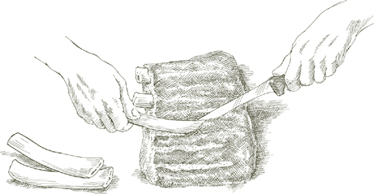
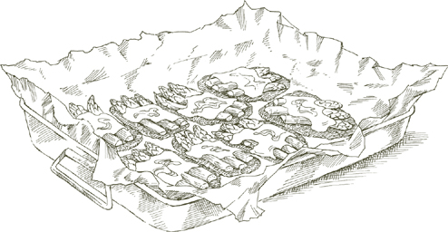

FOR ITALIAN FAMILIES, this exquisitely simple dish is the classic way to cook a roast. It is a perfect illustration of the basic pan-roasting method used by home cooks in Italy, conducted entirely over a burner. Its secret lies in slow, watchful cooking, in a partly covered pot, carefully monitoring the amount of liquid so that there is just enough to keep the meat from sticking to the pan, but not so much that it dilutes its flavor. No other technique produces a more savory or succulent roast, and it is as successful with birds and lamb as it is with veal.
For 6 servings
3 medium garlic cloves
2 pounds boned veal roast (see note below)
A sprig of rosemary OR 1 teaspoon dried rosemary leaves
2 tablespoons vegetable oil
2 tablespoons butter
Salt
Black pepper, ground fresh from the mill
⅔ cup dry white wine
Note  A juicy, flavorful, and not expensive cut for this roast would be boned, rolled shoulder of veal.
A juicy, flavorful, and not expensive cut for this roast would be boned, rolled shoulder of veal.
1. Lightly mash the garlic with a knife handle, hitting it just hard enough to split the skin, which you will remove and discard.
2. If the meat is to be rolled up, put the garlic, rosemary, and a few grindings of pepper on it while it is flat, then roll it, and tie it securely. If it is a solid piece from the round, pierce it at several points with a sharp, narrow-bladed knife and insert the garlic and distribute here and there the sprig of rosemary, divided into several pieces, or the dried leaves.
3. Choose a heavy-bottomed or enameled cast-iron pot, possibly oval-shaped, just large enough to hold the meat. Put in the oil and butter, turn on the heat to medium high, and when the butter foam begins to subside, put in the meat and brown it deeply all over. Sprinkle with salt and pepper.
4. Add the wine and, using a wooden spoon, loosen the browning residues sticking to bottom and sides of the pot. Adjust heat so that the wine barely simmers, set the cover on slightly ajar, and cook for 1½ to 2 hours, until the meat feels very tender when prodded with a fork. Turn the roast from time to time while it is cooking and, if there is no liquid in the pot, add 2 or 3 tablespoons of water as often as needed.
5. When done, transfer the roast to a cutting board. Should there be no juices left in the pan, put in ¼ cup of water, turn the heat up to high, and boil the water away while loosening the cooking residues stuck to the bottom and sides. If on the other hand, you have ended up with too much liquid in the pan—there should be about a spoonful or slightly less of juice per serving—reduce it over high heat. Turn off the heat.
6. Cut the roast into slices about ¼ inch thick. Arrange them on a warm platter, spoon the cooking juices over them, and serve at once.
Ahead-of-time note The cooking can be completed up to this point several hours in advance. Reheat gently in a covered pan with 1 or 2 tablespoons of water if necessary.

THE BREAST is one of the juiciest and tastiest, as well as one of the least expensive, cuts of veal. The rib bones it is attached to must be removed so that the meat can be rolled, but if you have the butcher do it for you, don’t leave the bones behind because they are an excellent addition to homemade meat broth.
If you’d like to try boning the meat yourself—and it is quite simple—proceed as follows: Lay the breast on a work counter, ribs facing down, and slip the blade of a sharp knife between the meat and the bones, working all the meat loose in a single, flat piece. Remove bits of gristle and loose patches of skin, but do not detach the one layer of skin that adheres to and covers the breast.
For 4 to 6 servings
Breast of veal in a single piece, 4½ to 5 pounds with the bones, yielding approximately 1¾ pounds of meat when boned either by the butcher or as described above
Salt
Black pepper, ground fresh from the mill
¼ pound pancetta, sliced very, very thin
2 or 3 garlic cloves, peeled
A sprig or two of rosemary OR 1 teaspoon dried rosemary leaves
Trussing string
1 tablespoon vegetable oil
2 tablespoons butter
½ cup dry white wine
1. Lay the boned meat flat, skin side facing down, sprinkle with salt and pepper, spread the sliced pancetta over it, add the garlic cloves, spaced well apart, and top with rosemary. Roll the meat up tightly, jelly-roll fashion, and tie it firmly with trussing string.
2. Choose a heavy-bottomed or enameled cast-iron pot, possibly oval-shaped, just large enough for the meat. Put in the oil and butter, turn on the heat to medium high, and when the butter foam begins to subside, put in the meat and brown it deeply all over. Sprinkle with salt and add the wine.
3. Let the wine come to a boil, turn the meat in it, and after a few seconds, turn down the heat so that the wine will bubble at a very slow, intermittent simmer. Set the cover on slightly ajar, and cook for 1½ to 2 hours, until the meat feels very tender when prodded with a fork. Turn the breast from time to time while it is cooking and, if there is no liquid in the pot, add 2 or 3 tablespoons of water as often as is necessary.
4. Transfer the meat to a cutting board. Add 2 tablespoons of water to the juices in the pot, turn up the heat to high, and boil the water away while using a wooden spoon to scrape loose the cooking residues from the bottom and sides. Turn off the heat.
5. Cut the breast into slices a little less than ½ inch thick. If you leave the trussing strings on, it will be easier to cut the breast into compact slices, but make sure you pick out all the bits of string after slicing. Look for and discard the 2 garlic cloves, arrange the slices on a warm serving platter, pour the pot juices over them, and serve at once.
Ahead-of-time note Follow the recommendations for Pan-Roasted Veal with Garlic, Rosemary, and White Wine.
ALTHOUGH THIS HAD long been one of my favorite meat dishes, it was so simple and straightforward that I took it for granted, and it escaped my notice as a recipe to record. The late James Beard had it with me at Bologna’s Diana restaurant when he came, in the mid-1970s, to observe the course I was then teaching. It was he who was so taken with it that he urged me to set the recipe down.
The whole breast, with the bones in, is pan-roasted on top of the stove in the classic Italian manner, with no liquid but a small amount of cooking fat, a little wine, and its own juices. It is far simpler to do than any of the fancy stuffed things one sometimes does with breast of veal, and it produces an impressive roast with a rich brown color, and astonishingly tender, savory meat.
For 4 servings
3 tablespoons extra virgin olive oil 3 whole garlic cloves, peeled
3½ pounds breast of veal with rib bones in
2 sprigs of fresh rosemary OR 1 teaspoon dried leaves
Salt
Black pepper, ground fresh from the mill
⅔ cup dry white wine
1. Choose a saute pan that can subsequently accommodate the meat lying flat. Put in the oil and garlic, and turn on the heat to medium.

2. When the oil is quite hot, put in the breast, skin side facing down. The oil should sizzle when the meat goes in. Add the rosemary. Brown the meat deeply on one side, then on the other. Add salt and pepper, cook a minute or two longer, turning the breast 2 or 3 times, then add the wine. When the wine has bubbled briskly for 20 or 30 seconds, turn the heat down to low, and cover the pan, setting the lid slightly ajar.
3. Turn the meat from time to time while it cooks. If you find it sticking, loosen it with the help of 2 or 3 tablespoons of water and check the heat to make sure you are cooking at a very gentle pace. The veal is done when it feels very tender when prodded with a fork and has become colored a lovely brown all over. Expect it to take 2 to 2½ hours.
4. Transfer the breast to a cutting board with the ribs facing you. Use a sharp boning knife to work the bones loose, pull them away, and discard them. Carve the meat into thin slices, cutting it on the diagonal. Put the sliced meat on a warm serving platter.

5. Tip the pan, and spoon off some of the fat. Turn the heat on to medium, put in 2 or 3 tablespoons of water, and boil it away while using a wooden spoon to scrape loose cooking residues from the bottom and sides. Pour the pan juices over the veal and bring to the table promptly.
Ossobuco, oss bus in Milan’s dialect, means “bone with a hole.” The particular bone in question is that of a calf’s hind shank, and the ring of meat that circles it is the sweetest and most tender on the entire animal. To be sure that it is as meltingly tender on the plate as Nature had intended, be guided by the following suggestions:
• Insist that the shank come from the meatier hind leg only. If you are buying it in a supermarket and are in doubt, look for one of the butchers who is usually on hand during the day, and ask him.
• Have the ossobuco cut no thicker than 1½ inches. It is the size at which it cooks best. Thick ossobuco, however impressive it looks on the plate, rarely cooks long and slowly enough, and it usually ends up being chewy and stringy.
• Make sure the butcher does not remove the skin enveloping the shanks. It not only helps to hold the ossobuco together while it cooks, but its creamy consistency makes a delectable contribution to the final flavor of the dish.
• Be prepared to give ossobuco time enough to cook. Slow, patient cooking is essential if you want to protect the shank’s natural juiciness.
Note When you are buying a whole shank, ask the butcher to saw off both ends for you. You don’t want them in the ossobuco because they don’t have much meat, but they make a splendid addition to the assorted components of a homemade meat broth.
For 6 to 8 servings
1 cup onion chopped fine
⅔ cup carrot chopped fine
⅔ cup celery chopped fine
4 tablespoons (½ stick) butter
1 teaspoon garlic chopped fine
2 strips lemon peel with none of the white pith beneath it
⅓ cup vegetable oil
8 1½-inch-thick slices of veal hind shank, each tied tightly around the middle
Flour, spread on a plate
1 cup dry white wine
1 cup Basic Homemade Meat Broth, prepared as directed, OR ½ cup canned beef broth with
½ cup water
1½ cups canned imported Italian plum tomatoes, coarsely chopped, with their juice
½ teaspoon fresh thyme OR ¼ teaspoon dried
2 bay leaves
2 or 3 sprigs of parsley
Black pepper, ground fresh from the mill
Salt
1. Preheat oven to 350°.
2. Choose a pot with a heavy bottom or of enameled cast iron that can subsequently accommodate all the veal shanks in a single layer. (If you do not have a single pot large enough, use two smaller ones, dividing the ingredients into two equal halves, but adding 1 extra tablespoon of butter for each pot.) Put in the onion, carrot, celery, and butter, and turn on the heat to medium. Cook for about 6 to 7 minutes, add the chopped garlic and lemon peel, cook another 2 or 3 minutes until the vegetables soften and wilt, then remove from heat.
3. Put the vegetable oil in a skillet and turn on the heat to medium high. Turn the veal shanks in the flour, coating them all over and shaking off the excess flour.
When the oil is quite hot—it should sizzle when the veal goes in—slip in the shanks and brown them deeply all over. Remove them from the skillet using a slotted spoon or spatula, and stand them side by side over the chopped vegetables in the pot.
4. Tip the skillet and spoon off all but a little bit of the oil. Add the wine, reduce it by simmering it over medium heat while scraping loose with a wooden spoon the browning residues stuck to the bottom and sides. Pour the skillet juices over the veal in the pot.
5. Put the broth in the skillet, bring it to a simmer, and add it to the pot. Also add the chopped tomatoes with their juice, the thyme, the bay leaves, parsley, pepper, and salt. The broth should have come two-thirds of the way up to the top of the shanks. If it does not, add more.
6. Bring the liquids in the pot to a simmer, cover the pot tightly, and place it in the lower third of the preheated oven. Cook for about 2 hours or until the meat feels very tender when prodded with a fork and a dense, creamy sauce has formed. Turn and baste the shanks every 20 minutes. If, while the ossobuco is cooking, the liquid in the pot becomes insufficient, add 2 tablespoons of water at a time, as needed.
7. When the ossobuco is done, transfer it to a warm platter, carefully remove the trussing strings without letting the shanks come apart, pour the sauce in the pot over them, and serve at once. If the pot juices are too thin and watery, place the pot over a burner with high heat, boil down the excess liquid, then pour the reduced juices over the ossobuco on the platter.
Note Do not flour the veal, or anything else that needs to be browned, in advance because the flour will become soggy and make it impossible to achieve a crisp surface.
If you wish to observe ossobuco tradition strictly, you must add an aromatic mixture called gremolada to the shanks, when they are nearly done. I never do it myself, but some people like it, and if you want to try it, here is what it consists of:
1 teaspoon grated lemon peel, taking care to avoid the white pith
¼ teaspoon garlic chopped very, very fine
1 tablespoon chopped parsley
Combine the ingredients evenly and sprinkle the mixture over the shanks while they are cooking but when they are done, so that the gremolada cooks with the veal no longer than 2 minutes.
Ahead-of-time note Ossobucocan be completely cooked a day or two in advance. It should be reheated gently over the stove, adding 1 or 2 tablespoons of water, if needed. If you are using the gremolada, add it only when reheating the meat.
THE LIGHT-HANDED and delicately fragrant ossobuco of this recipe is quite different from the robust Milanese version. The tomato and vegetables and herbs of the traditional preparation are absent, and it is cooked in the slow Italian pan-roasted style, entirely on top of the stove.
For 6 to 8 servings
¼ cup extra virgin olive oil
2 tablespoons butter
8 1½-inch-thick slices of veal hind shank, each tied tightly around the middle
Flour, spread on a plate
Salt
Black pepper, ground fresh from the mill
1 cup dry white wine
2 tablespoons lemon peel with none of the white pith beneath it, chopped very fine
5 tablespoons chopped parsley
1. Choose a large saute pan that can subsequently accommodate all the shanks snugly without overlapping. (If you do not have a single pan that broad, use two, dividing the butter and oil in half, then adding 1 tablespoon of each for each pan.) Put in the oil and butter, and turn on the heat to medium high. When the butter foam begins to subside, turn the shanks in the flour, coating them on both sides, shake off excess flour, and slip them into the pan.
2. Brown the meat deeply on both sides, then sprinkle with salt and several grindings of pepper, turn the shanks, and add the wine. Adjust heat to cook at a very slow simmer, and cover the pan, setting the lid slightly ajar.
3. After 10 minutes or so, look into the pan to see if the liquid has become insufficient to continue cooking. If, as is likely, this is the case, add ⅓ cup warm water. Check the pan from time to time, and add more water as needed. The total cooking time will come to 2 or 2½ hours: The shanks are done when the meat comes easily away from the bone and is tender enough to be cut with a fork. When done, transfer the veal to a warm plate, using a slotted spoon or spatula.
4. Add the chopped lemon peel and parsley to the pan, turn the heat up to medium, and stir for about 1 minute with a wooden spoon, loosening cooking residues from the bottom and sides, and reducing any runny juices in the pan. Return the shanks to the pan, turn them briefly in the juices, then transfer the entire contents of the pan to a warm platter and serve at once.
Ahead-of-time note The light, fragrant flavor of this particular ossobuco does not withstand refrigeration well, so it is not advisable to prepare it very long in advance. It can certainly be made early on the day it is to be served; reheat it in the pan it was cooked in, covered, over low heat, for 10 or 15 minutes until the meat is warmed all the way through. If the juices in the pan become insufficient, replenish with 1 or 2 tablespoons water.
Stinco is Italian for what Trieste’s dialect calls schinco, a veal shank slowly braised whole, then served carved off the bone in very thin slices. It comes from the same part of the hind leg that Milan uses for ossobuco, whose succulent quality it shares, but unlike ossobuco, it is not made with tomatoes. The anchovies that are part of the flavor base dissolve and become undetectable, but they contribute subtly to the depth of taste that is the distinctive feature of this dish. Stinco, or schinco, tastes best when cooked entirely over the stove in the classic Italian pan-roasting method.
For 8 servings
2 whole veal shanks (see note below)
2 garlic cloves
3 tablespoons vegetable oil
3 tablespoons butter
½ cup chopped onion
Salt
Black pepper, ground fresh from the mill
⅓ cup dry white wine
6 flat anchovy fillets (preferably the ones prepared at home as described)
Note The shanks must come from the hind leg. Have the joint at the broad end of the shank sawed off flat so that the bone can be brought to the table standing up, surrounded by the carved slices. Also have the butcher take off enough of the bone at the narrow end to expose the marrow, which, at table, can be picked out with a narrow implement and is most delectable.
1. Stand the shanks on their broad ends and, with a sharp knife, loosen the skin, flesh, and tendons at the narrow end. This will cause the meat, as it cooks, to come away from the bone at that end, and to gather in a plump mass at the base of the shank, giving the stinco a shape like that of a giant lollypop. If you find this difficult to do when the meat is raw, try it after 10 minutes’ cooking, when it becomes much easier.
2. Lightly mash the garlic with a knife handle, just hard enough to split the skin, which you will loosen and discard.
3. You will need a heavy-bottomed pot, preferably oval in shape, that can subsequently snugly accommodate both shanks. Put in the oil and butter, turn on the heat to medium high, and when the butter foam begins to subside, put in both shanks.
4. Turn the shanks over to brown the veal deeply all over, then lower the heat to medium and add the chopped onion, nudging it in between the meat to the bottom of the pot.
5. Cook the onion, stirring, until it becomes colored gold. Add the garlic, salt, pepper, and wine. Let the wine simmer for about 1 minute, turning the shanks once or twice, then add the anchovy fillets, turn the heat down to very low, and cover the pot, setting the lid slightly ajar. Cook for about 2 hours, until the meat feels very tender when prodded with a fork. Turn the veal over from time to time. Whenever there is so little liquid in the pot that the meat begins to stick to the bottom, add ⅓ cup water and turn the shanks.
6. When the veal is done, lay the shank down on a cutting board, and carve the meat into thin slices, cutting at an angle, diagonally toward the bone. Stand the carved bones on their broader end on a warm serving platter and spread the slices of meat at their base.
7. Pour ⅓ cup water into the pot in which you cooked the meat, turn the heat up to high, and boil away the water using a wooden spoon to loosen all cooking residues from the bottom and sides. Pour the pot juices over the slices of veal and serve at once.
Ahead-of-time note The entire dish can be made several hours in advance. When doing so, instead of pouring the pot juices over the veal, put the sliced meat into the pot together with the bones. Reheat over gentle heat just before serving, turning the slices in the juice. Arrange on a warm platter as described above, and serve at once. Use the dish the same day you make it, because its flavor will deteriorate if kept overnight.
For 4 servings
2 tablespoons vegetable oil
2 tablespoons butter
1 pound veal scaloppine, cut from the top round, and flattened as described
Flour, spread on a plate
Salt
Black pepper, ground fresh from the mill
½ cup dry Marsala wine
1. Put the oil and 1 tablespoon butter in a skillet and turn on the heat to medium high.
2. When the fat is hot, dredge both sides of the scaloppine in flour, shake off excess flour, and slip the meat into the pan. Brown them quickly on both sides, about half a minute per side if the oil and butter are hot enough. Transfer them to a warm plate, using a slotted spoon or spatula, and sprinkle with salt and pepper. (If the scaloppine don’t all fit into the pan at one time without overlapping, do them in batches, but dredge each batch in flour just before slipping the meat into the pan; otherwise the flour will become soggy and make it impossible to achieve a crisp surface.)
3. Turn the heat on to high, add the Marsala, and while it boils down, scrape loose with a wooden spoon all browning residues on the bottom and sides. Add the second tablespoon of butter and any juices the scaloppine may have shed on the plate. When the juices in the pan are no longer runny and have the density of sauce, turn the heat down to low, return the scaloppine to the pan, and turn them once or twice to baste them with the pan juices. Turn out the entire contents of the pan onto a warm platter and serve at once.
IN THIS VARIATION on the classic veal and Marsala theme, cream is introduced to soften the wine’s emphatic accent without robbing it of any of its flavor. It becomes a rather more gentle dish than it is in its standard edition.
For 4 servings
1 tablespoon vegetable oil
2 tablespoons butter
1 pound veal scaloppine, cut from the top round, and flattened as described
Flour, spread on a plate
Salt
Black pepper, ground fresh from the mill
½ cup dry Marsala wine
⅓ cup heavy whipping cream
1. Put the oil and butter into a skillet, turn on the heat to medium high, and when the butter foam begins to subside, dredge the scaloppine in flour and cook them exactly as described in Step 2 of Veal Scaloppine with Marsala.
2. Turn the heat on to high, put into the pan any juices the scaloppine may have shed on the plate and the Marsala. While the wine boils down, scrape loose with a wooden spoon all browning residues on the bottom and sides. Add the cream and stir constantly until the cream is reduced and bound with the juices in the pan into a dense sauce.
3. Turn the heat down to medium, return the scaloppine to the pan, and turn them once or twice to coat them well with sauce. Turn out the entire contents of the pan onto a warm platter and serve at once.
For 4 servings
1 tablespoon vegetable oil
3 tablespoons butter
1 pound veal scaloppine, cut from the top round, and flattened as described
Flour, spread on a plate
Salt
Black pepper, ground fresh from the mill
2 tablespoons freshly squeezed lemon juice
2 tablespoons parsley chopped very fine
½ lemon, sliced very thin
1. Put the oil and 2 tablespoons of butter into a skillet, turn on the heat to medium high, and when the butter foam begins to subside, dredge the scaloppine in flour and cook them exactly as described in Step 2 of Veal Scaloppine with Marsala.
2. Off heat, add the lemon juice to the skillet, using a wooden spoon to scrape loose the browning residues on the bottom and sides. Swirl in the remaining tablespoon of butter, put in any juices the scaloppine may have shed in the plate, and add the chopped parsley, stirring to distribute it evenly.
3. Turn on the heat to medium and return the scaloppine to the pan. Turn them quickly and briefly, just long enough to warm them and coat them with sauce. Turn out the entire contents of the pan onto a warm platter, garnish the platter with lemon slices, and serve at once.
Note One sometimes sees scaloppine with lemon topped with a sprinkling of fresh chopped parsley. It’s perfectly all right as long as you don’t make the sauce with parsley. The color of cooked parsley contrasts unappetizingly with that of the fresh. If you use one, omit the other.
For 4 servings
½ pound mozzarella, preferably buffalo-milk mozzarella
2 tablespoons butter
1 tablespoon vegetable oil
1 pound veal scaloppine, cut from the top round, and flattened as described
Salt
Black pepper, ground fresh from the mill
1. Slice the mozzarella into the thinnest slices you are able to, making sure you end up with 1 slice for every scaloppine.
2. Choose a sauté pan that can subsequently accommodate all the scaloppine without overlapping. (If you do not have a single pan that large, use two, dividing the butter and oil in half, then adding 1 tablespoon of each for each pan.) Put in the butter and oil, and turn on the heat to high.
3. When the butter foam begins to subside, put in the scaloppine. Brown them quickly on both sides, about 1 minute altogether if the fat is hot enough. Sprinkle with salt and turn the heat down to medium.
4. Place a slice of mozzarella on each of the scaloppine, and sprinkle with pepper. Put a cover on the pan for the few seconds it will take for the mozzarella to soften. Using a slotted spoon or spatula, transfer the veal to a warm serving platter, the mozzarella-topped side facing up.
5. Add 1 or 2 tablespoons water to the pan, turn the heat up to high, and while the water boils away, scrape the cooking residues from the bottom and sides with a wooden spoon. Pour the few dark drops of pan juices over the scaloppine, stippling the mozzarella, and serve at once.
For 4 servings
2½ tablespoons vegetable oil
3 garlic cloves, peeled
1 pound veal scaloppine, cut from the top round, and flattened as described
Flour, spread on a plate
Salt
Black pepper, ground fresh from the mill
⅓ cup dry white wine
½ cup canned imported Italian plum tomatoes, chopped, with their juice
1 tablespoon butter
1 teaspoon fresh oregano OR ½ teaspoon dried
2 tablespoons capers, soaked and rinsed as described if packed in salt, drained if in vinegar
1. Put the oil and garlic in a skillet, turn on the heat to medium, and cook the garlic until it becomes colored a light nut brown. Remove it from the pan and discard it.
2. Turn up the heat to medium high, dredge the scaloppine in flour, and cook them exactly as described in Step 2 of Veal Scaloppine with Marsala, transferring them to a warm plate when done.
3. Over medium-high heat, add the wine, and while the wine simmers use a wooden spoon to loosen all cooking residues on the bottom and sides. Add the chopped tomatoes with their juice, stir to coat well, add the butter and any juices the scaloppine may have shed on the plate, stir, and adjust heat to cook at a steady, but gentle simmer.
4. In 15 or 20 minutes, when the fat floats free of the tomatoes, add the oregano and capers, stir thoroughly, then return the scaloppine to the pan and turn them in the tomato sauce for about a minute until they are warm again. Turn out the entire contents of the pan onto a warm platter and serve at once.
For 4 servings
3 tablespoons butter
4 flat anchovy fillets (preferably the ones prepared at home as described), chopped very fine
¼ pound boiled unsmoked ham, sliced ¼ inch thick and diced fine
1½ tablespoons capers, soaked and rinsed as described if packed in salt, drained if in vinegar, and chopped
1 tablespoon vegetable oil
Flour, spread on a plate
1 pound veal scaloppine, cut from the top round, and flattened as described
Salt
Black pepper, ground fresh from the mill
3 tablespoons grappa (see note below)
¼ cup heavy whipping cream
Note Grappa is a pungently fragrant distilled spirit made from pomace, a residue of winemaking. It is usually obtainable in stores stocking Italian wines, but it can be substituted with marc, a French spirit made like grappa. If neither is available, use calvados, French apple brandy, or a good grape brandy.
1. Put half the butter into a small saucepan, turn on the heat to very low, and add the chopped anchovies. Stir constantly as the anchovies cook, mashing them to a pulp against the sides of the pan with a wooden spoon. When the anchovies begin to dissolve, add the diced ham and chopped capers, and turn up the heat to medium. Stir thoroughly to coat well, cook for about 1 minute, then remove the pan from heat.
2. Put the oil and remaining butter in a skillet, and turn on the heat to medium high. When the butter foam begins to subside, dredge the scaloppine in flour and cook them exactly as described in Step 2 of Veal Scaloppine with Marsala.
3. Tip the skillet and spoon off most of the fat. Return to medium-high heat, add the grappa, and while it simmers quickly use a wooden spoon to loosen all cooking residues on the bottom and sides. Add the ham and anchovy mixture from the saucepan to the skillet and any juices the scaloppine may have shed on the plate, and stir thoroughly to combine all ingredients evenly. Add the cream, and reduce it briefly while stirring.
4. Return the scaloppine to the skillet, and turn them in the hot sauce for about a minute until they are completely warm again. Turn out the entire contents of the pan onto a warm platter and serve at once.
For 4 servings
½ pound fresh asparagus
2 tablespoons butter plus butter for dotting the finished dish
1½ tablespoons vegetable oil
1 pound veal scaloppine, cut from the top round, and flattened as described
Flour, spread on a plate
A baking dish
Cooking parchment or heavy-duty aluminum foil
Salt
Black pepper, ground fresh from the mill
6 ounces fontina cheese
⅓ cup dry Marsala wine
1. Trim the asparagus spears, peel the stalks, and cook the asparagus as described. Do not overcook it, but drain it when it is still firm to the bite. Set it aside until you come to the directions for cutting it later in this recipe.
2. Put the butter and oil in a saute pan, and turn on the heat to high. When the butter foam begins to subside, take as many scaloppine as will fit loosely at one time in the pan, dredge them on both sides in the flour, shaking off excess flour, and slip them into the pan. Brown the veal briefly on both sides, altogether a minute or less if the fat is very hot, then transfer to a plate using a slotted spoon or spatula. Add another batch of scaloppine to the pan, and repeat the above procedure until you have browned all the meat.
3. Preheat oven to 400°.
4. Choose a baking dish that can subsequently accommodate all the scaloppine snugly, but without overlapping. Line it with cooking parchment or a piece of heavy aluminum foil large enough to extend well beyond the edges of the dish. When working with foil, take care not to tear it or pierce it. Lay the scaloppine flat in the dish, and sprinkle them with salt and pepper.
5. Cut the asparagus diagonally into pieces that are no longer than the scaloppine. If any part of the stalk is thicker than ½ inch, divide it in half. Top each of the scaloppine with a layer of asparagus pieces. Sprinkle lightly with salt.
6. Cut the cheese into the thinnest slices you can. Do not worry if the slices are irregular in shape, they will fuse into one when the cheese melts. Cover the layer of asparagus with one of cheese slices.
7. Pour off and discard all the fat from the pan in which you browned the veal, but do not wipe the pan clean. Add to it any juices that the scaloppine may have shed on the plate and the Marsala. Turn on the heat to medium high, and scrape loose with a wooden spoon the browning residues on the bottom and sides, while reducing the juices in the pan to about 3 tablespoons.
8. Spoon the juices over the layer of cheese, distributing them evenly. Dot lightly with butter. Take a sheet of parchment or foil large enough to extend past the edge of the baking dish and lay it flat over the scaloppine. Bring together the edges of the lower sheet of parchment or foil and those of the upper sheet, crimping them to make a tight seal. Put the baking dish on the uppermost rack of the preheated oven and leave it in for 15 minutes, just long enough for the cheese to melt.

9. Take the dish out of the oven, and open the parchment or foil wrap, taking care to direct the outrushing steam away from you so as not to be scalded by it. Cut away the parchment or foil all around the dish and serve as is or gently lift the scaloppine out using a broad metal spatula, and transfer them to a warm serving platter without turning them over. Spoon the juices in the baking dish over them, and serve at once.
For 4 servings
⅓ cup crumb, the soft, crustless part of bread, preferably from good Italian or French bread
⅓ cup milk
2 ounces boiled unsmoked ham, chopped fine
2 ounces pork, ground or chopped fine
1 egg
⅓ cup freshly grated parmigiano-reggiano cheese
Salt
Black pepper, ground fresh from the mill
Whole nutmeg
1 pound veal scaloppine, cut from the top round, and flattened as described
Sturdy round toothpicks
2 tablespoons butter
1 tablespoon vegetable oil
Flour, spread on a plate
⅓ cup dry white wine
½ cup Basic Homemade Meat Broth, prepared as directed, OR ½ bouillon cube dissolved in ½ cup water
1. Put the crumb and milk in a small bowl. When the bread has soaked up the milk, mash it to a creamy consistency with a fork, and pour off all excess milk.
2. Add the chopped ham, pork, egg, grated Parmesan, salt, pepper, a tiny grating of nutmeg—about ⅓ teaspoon—and the bread and milk mush, and mix with a fork until all ingredients are evenly combined. Turn the mixture out on a work surface and divide into as many parts as you have scaloppine.
3. Lay the scaloppine flat on a work surface. Coat each with one of the parts of the stuffing mixture, spreading it evenly over the meat. Roll the meat up into a sausage-like roll, and fasten it with a toothpick inserted lengthwise to allow the roll to be turned easily later when cooking.
4. Choose a saute pan that can subsequently accommodate all the veal rolls in a single layer, put in the butter and oil, and turn on the heat to medium high. Dredge the rolls in flour all over, and when the butter foam subsides, slip them into the pan.
5. Brown the meat deeply all over, then add the wine. When the wine has bubbled away for a minute or so, sprinkle with salt, put in the broth, cover the pan, and turn the heat down to cook at a gentle simmer.
6. When the veal rolls have cooked all the way through, in about 20 minutes, transfer them to a warm platter. If the juices in the pan are thin and runny, turn the heat up to high and reduce them, while scraping loose with a wooden spoon cooking residues from the bottom and sides of the pan. If on the other hand, they are too thick and partly stuck to the pan, add 1 or 2 tablespoons water, and while the water boils away, scrape loose all cooking residues. Pour the pan juices over the veal rolls, and serve at once.

For 4 servings
1 pound veal scaloppine, cut from the top round, and flattened as described
¼ pound pancetta, sliced very, very thin
5 tablespoons freshly grated parmigiano-reggiano cheese
Sturdy round toothpicks
2 tablespoons butter
2 tablespoons vegetable oil
Salt
Black pepper, ground fresh from the mill
½ cup dry white wine
⅔ cup fresh, ripe tomatoes, peeled and chopped, OR canned Italian plum tomatoes, cut up, with their juice
1. Trim the scaloppine so that they are approximately 5 inches long and 3½ to 4 inches wide. Try not to end up with bits of meat left over that you can’t use. It does not really matter if some pieces are irregular: It’s better to use them than to waste them.
2. Lay the scaloppine flat and over each spread enough pancetta to cover. Sprinkle with grated Parmesan and roll up the scaloppine tightly into compact rolls. Fasten the rolls with a toothpick inserted lengthwise so that the meat can be turned in the pan. If any pancetta is left over, chop it very fine and set aside.
3. Put 1 tablespoon of butter and all the oil in a skillet and turn on the heat to medium high. When the butter foam begins to subside, put in the veal rolls, and turn them to brown them deeply all over. Transfer to a warm plate, using a slotted spoon or spatula, remove all the toothpicks, and sprinkle the meat with salt and pepper.
4. If you had set aside some chopped pancetta, put it in the skillet and cook it over medium heat for about 1 minute, then add the wine. Let the wine simmer steadily for 1½ to 2 minutes while using a wooden spoon to loosen cooking residues from the bottom and sides of the pan. Add the tomatoes, stir thoroughly, and adjust heat to cook for a minute or so at a steady simmer until the fat separates from the tomato.
5. Return the veal rolls to the pan, warming them up for a few minutes and turning them in the sauce from time to time. Take off heat, swirl in the remaining tablespoon of butter, then turn out the entire contents of the pan onto a warm platter and serve at once.
Ahead-of-time note These veal rolls don’t take that long to do and they taste best when served the moment they are made. If you must make them in advance, cook them through to the end up to several hours ahead of time, then reheat gently in their sauce.
For 6 servings
8 flat anchovy fillets (preferably the ones prepared at home as described)
3 tablespoons butter
¼ cup chopped parsley
⅓ cup canned imported Italian plum tomatoes, drained of juice
Black pepper, ground fresh from the mill
½ pound mozzarella, preferably imported buffalo-milk mozzarella
1½ pounds veal scaloppine, cut from the top round, and flattened as described
Salt
Thin kitchen twine
Flour, spread on a plate
½ cup dry Marsala wine
1. Chop the anchovies very, very fine, put them in a small saucepan with 1 tablespoon of butter, turn on the heat to very low, and while the anchovies are cooking, mash them with a wooden spoon against the side of the pan to reduce them to a pulp.
2. Add the chopped parsley, the tomatoes, a few grindings of pepper, and turn up the heat to medium. Cook at a steady simmer, stirring frequently, until the tomato thickens and the butter floats free.
3. Cut the mozzarella into the thinnest slices you can, possibly about ⅛ inch.
4. Lay the scaloppine flat on a platter or work surface, sprinkle with a tiny pinch of salt, and spread the tomato and anchovy sauce over them, stopping short of the edges to leave a margin of about ¼ inch all around. Top with sliced mozzarella. Roll up the scaloppine, push the meat in at both ends to plug them, and truss with kitchen twine, running the string once around the middle of the rolls, and once lengthwise so as to loop it over both ends.
5. Choose a skillet that can subsequently accommodate all the rolls without crowding them, put in the remaining 2 tablespoons of butter and turn the heat on to medium high. When the butter foam begins to subside, turn the veal rolls in the flour, shake off excess flour, and slip them into the pan. Cook for a minute or two, turning them, until they are browned deeply all over. If a little cheese oozes out of the rolls, it does no harm; it will help enrich the sauce. Transfer the meat to a warm plate, snip off the strings, and remove them, being careful not to undo the rolls.
6. Add the Marsala to the pan, bring it to a lively simmer for about 2 minutes, and while it is reducing use a wooden spoon to loosen cooking residues from the bottom and sides. Return the veal rolls to the pan, turn them gently in the sauce 2 or 3 times, then transfer the entire contents of the pan to a warm serving platter and serve at once.
A SINGLE, large slice of veal is covered with spinach, sautéed with onion and prosciutto, rolled up tightly, and pan-roasted with white wine. When it is sliced, the alternating layers of veal and stuffing make an attractive spiral pattern, but what is more important is that it is juicy and savory, tasting as good as it looks.
To produce the dish, you need a single, large, one-pound slice of veal, preferably cut from the broadest section of the top round, and flattened by your cooperative butcher to a thickness of no more than ⅜ inch. The breast of veal, which is usually employed to make large rolls, does not lend itself well to this recipe because of its uneven thickness.
For 4 servings
1½ pounds fresh spinach
Salt
3 tablespoons butter
2 tablespoons vegetable oil
2 tablespoons onion chopped very fine
¼ pound prosciutto OR pancetta chopped very fine
Black pepper, ground fresh from the mill
A 1-pound slice of veal, preferably from the top round (see remarks above), pounded flat to a thickness of ⅜ inch
Thin kitchen twine
½ cup dry white wine
⅓ cup heavy whipping cream
1. Pull the leaves from the spinach, discarding all the stems. Soak the spinach in a basin of cold water, dunking it repeatedly. Carefully lift out the spinach, empty the basin of water together with the soil that has settled to the bottom, refill with fresh water, and repeat the entire procedure as often as necessary until the spinach is completely free of soil.
2. Cook the spinach in a covered pan over medium heat with just the water that clings to its leaves and 1 tablespoon of salt to keep it green. Cook for 2 minutes after the liquid shed by the spinach comes to a boil, then drain at once. As soon as it is cool enough to handle, squeeze as much moisture as you can out of the spinach, chop it very fine with a knife, not in the food processor, and set it aside.
3. Put 1 tablespoon of butter, 1 tablespoon of oil, all the onion, and all the prosciutto or pancetta into a small saute pan, and turn on the heat to medium. Cook the onion until it becomes colored a rich, golden brown, and add the chopped spinach and several grindings of pepper. Stir thoroughly to coat well, and cook for 20 or 30 seconds, then remove from heat. Taste and, if necessary, correct for salt.
4. Lay the veal slice flat on a work surface. Spread the spinach mixture over it, spreading it evenly. Lift one end of the slice to look for the way the grain of the meat runs, then curl up the veal tightly with the grain parallel to the length of the roll. When you slice the roll after cooking, you will easily obtain even, compact slices because you will be cutting across the grain. Tie the roll securely into a salami-like shape with kitchen twine.
5. Choose a pot, oval if possible, in which the roll will fit snugly. Put in the remaining butter and oil, turn on the heat to medium high, and as soon as the butter foam begins to subside, put in the veal roll. Brown it deeply all over, then sprinkle with salt and pepper, turn the roll once or twice, and add the wine. When the wine has simmered briskly for 15 or 20 seconds, turn the heat down to low, and cover the pot with the lid set slightly ajar.
6. Cook for about 1½ hours, turning the roll from time to time, until the meat feels very tender when prodded with a fork.
Uncover the pot, add the cream, turn the heat up, and use a wooden spoon to loosen cooking residues from the bottom and sides of the pot. Remove from heat as soon as the cream thickens a bit and becomes colored a light nut brown.
7. Transfer the roll to a warm platter. Snip off and remove the kitchen twine. Cut the roll into thin slices, pour over it the juices from the pot, and serve at once.
Ahead-of-time note You can complete the recipe up to this point several hours in advance. Before proceeding, reheat gently, adding 1 tablespoon water if needed. Do not refrigerate at any time or the spinach will acquire a sour taste.
SOME ITALIAN DISHES are so closely associated with their place of origin that they have appropriated its name for their own. To Italians a fiorentina means “T-bone steak,” and a breaded veal chop is una milanese: No other description is required. It can be debated whether ossobuco or the veal chop milanese is Milan’s best-known gastronomic export. The latter has certainly been appropriated by many other cuisines, most notably in Austria, where it was taken off the bone to become the national dish, wiener schnitzel.
The classic Milanese chop is a single-rib chop that has been pounded very thin, with the rib trimmed entirely clean to give the bone the appearance of a handle. (Do not discard the trimmings from the bone. Add them to the assortment of meats for homemade broth, or if you have enough of them, grind them and make meatballs.) Before pounding the chop flat, a Milanese butcher will knock off the corner where the rib meets the bone. Your own butcher can do this easily, but so can you: Use a meat cleaver to crop the corner, then pound the chop’s eye thin, following the method for flattening scaloppine.
When the chop is taken from a large animal, there may be too much meat on a single rib to flatten. Before pounding it, it should be sliced horizontally into two chops, one attached to the rib, the other not.
For 6 servings
2 eggs
6 veal chops, with either 6 or 3 ribs, depending on the size, the bones trimmed clean and the meat flattened (see explanatory remarks above)
1½ cups fine, dry, unflavored bread crumbs spread on a plate
2 tablespoons butter
2 tablespoons vegetable oil
Salt
1. Lightly beat the eggs in a deep dish, using a fork or a whisk.
2. Dip each chop in the egg, coating both sides and letting excess egg flow back into the plate as you pull the chop away. Turn the meat in the bread crumbs as follows: Press the chop firmly against the crumbs, using the palm of your hand. Tap it 2 or 3 times, then turn it and repeat the procedure. Your palm should come away dry, which means the crumbs are adhering to the meat.
3. Choose a saute pan that can subsequently accommodate the chops without overlapping. If you don’t have a large enough pan, you can use a smaller one, and do the chops in 2 or even 3 batches. Put in the butter and oil, turn on the heat to medium high, and when the butter foam begins to subside, slip in the chops. Cook until a dark golden crust forms on one side, then turn them and do the other side, altogether about 5 minutes, depending on the thickness of the chops. Transfer to a warm platter and sprinkle with salt. Serve promptly when all the chops are done.
To the ingredients in the above recipe for Sautéed Breaded Veal Chops, Milanese Style, add the following:
Rosemary leaves, chopped very fine, 1 tablespoon if fresh, 2 teaspoons if dried
4 garlic cloves, lightly mashed with a knife handle and peeled
Use the basic recipe, varying it as follows:
1. Sprinkle the chops with chopped rosemary after dipping them into the egg, but before coating them with bread crumbs.
2. Put the garlic into the pan at the same time with the butter and oil and remove it as soon as it becomes colored a light nut brown, either before or after you have begun sautéing the chops.
THE ITALIAN for cutlet, cotoletta, describes not the type of meat, but the method by which it is cooked. The method is the one described above in Sautéed Breaded Veal Chops, Milanese Style. To make cotolette—or cutlets—follow it exactly, simply replacing the chops with veal scaloppine, or thin slices of beef, or sliced chicken or turkey breast, or even sliced eggplant. When using meat sliced very thin, as for example scaloppine, the cooking time must be very brief, just long enough to form a light crust on both sides of the cutlet.
Serving Suggestion for Breaded Veal Cutlets They are delicious, either hot or at room temperature, with a combination of Fried Eggplant, and Oven-Browned Tomatoes, both also good either hot or at room temperature.
For 4 servings
3 tablespoons vegetable oil
4 veal loin chops less than 1 inch thick
Flour, spread on a plate
12 dried sage leaves
Salt
Black pepper, ground fresh from the mill
⅓ cup dry white wine 1 tablespoon butter
1. Choose a skillet that can subsequently accommodate all the chops at one time without overlapping. If you don’t have a pan large enough, choose a smaller one in which you can do the chops in 2 batches. Put in the vegetable oil, and turn on the heat to medium high.
2. When the oil becomes hot, turn both sides of the chops in the flour, shaking off any excess flour, and slip the veal into the pan together with the sage leaves. Cook for about 8 minutes, turning the chops two or three times to cook both sides evenly. The chops are done when the meat is rosy pink. Don’t cook them much longer or they will become dry. Transfer to a warm plate with a slotted spoon or spatula, and sprinkle with salt and pepper.
3. Tip the skillet and spoon off most of the oil. Add the wine and simmer it over medium-high heat until it is reduced to a slightly syrupy consistency. While it simmers, scrape with a wooden spoon to loosen cooking residues from the bottom and sides of the pan. When the wine has simmered away almost completely, turn the heat down to low and stir in the butter. Return the chops to the skillet briefly, turning them in the pan juices, then transfer the entire contents of the pan to a warm platter and serve at once.

For 4 servings
2 tablespoons butter
1 teaspoon garlic chopped coarse
2 flat anchovy fillets (preferably the ones prepared at home as described), chopped very, very fine
2 tablespoons chopped parsley
3 tablespoons vegetable oil
4 veal loin chops less than 1 inch thick
Flour, spread on a plate
Salt
Black pepper, ground fresh from the mill
1. Put the butter and garlic in a small saucepan and turn on the heat to medium. Cook the garlic until it becomes colored a pale gold, then turn the heat down to very low, and put in the chopped anchovies. Cook, stirring the anchovies with a wooden spoon and mashing them against the sides of the pan, until they begin to dissolve into a paste. Add the chopped parsley, stir and cook for about 20 seconds, then remove from heat.
2. Choose a saute pan that can subsequently accommodate all the chops without overlapping. Put in the vegetable oil and turn on the heat to medium high. When the oil becomes hot, turn both sides of the chops in the flour, shaking off any excess flour, and slip the veal into the pan. Cook for about 8 minutes, turning the chops two or three times to cook both sides evenly. The chops are done when the meat is rosy pink. Don’t cook them much longer or they will become dry. Transfer to a warm plate with a slotted spoon or spatula, and sprinkle with salt and pepper.
3. Turn the heat on to medium, add 2 or 3 tablespoons of water, and, as you boil it away, scrape loose the cooking residues in the pan. Return the chops to the pan, and immediately pour the anchovy and parsley sauce over them. Turn the chops just once or twice, then transfer the entire contents of the pan to a warm platter and serve at once.
THE MOST DESIRABLE cuts for an Italian veal stew are the shoulder and the shanks. Avoid the round or the loin, which are too lean for the prolonged cooking a stew requires, becoming dry and stringy.
For 4 to 6 servings
1 tablespoon vegetable oil
1½ tablespoons butter
1½ pounds boned veal shoulder or shank, cut into cubes of approximately 1½ inches
Flour, spread on a plate
2 tablespoons chopped onion 18 dried sage leaves ⅔ cup dry white wine
Salt
Black pepper, ground fresh from the mill
⅓ cup heavy whipping cream
1. Put the oil and butter in a saute pan and turn on the heat to high. When the butter foam begins to subside, turn the veal cubes in the flour, coating them on all sides, shake off excess flour, and put them in the pan. Cook the meat, turning it, until all sides are deeply browned. Transfer it to a plate using a slotted spoon or spatula. (If the meat doesn’t fit loosely into the pan all at one time, brown it in batches, but dip the cubes in flour only when you are ready to slip them into the pan.)
2. Turn the heat down to medium, and put the chopped onion in the pan together with the sage leaves. Cook the onion until it becomes colored a pale gold, return the meat to the pan, and add the wine, bringing it to a lively simmer while scraping the bottom and sides of the pan with a wooden spoon to loosen the browning residues. After half a minute or less, adjust the heat to cook at a gentle simmer, add salt, several grindings of pepper, and cover the pan. Cook for 45 minutes, turning and basting the meat from time to time. If the liquid in the pan becomes insufficient, replenish it when needed with 1 or 2 tablespoons of water.
3. Add the heavy cream, turn the meat thoroughly to coat it well, cover the pan again, turn the heat down to low, and cook for another 30 minutes, or until the veal feels very tender when prodded with a fork. Taste and correct for salt. Transfer the entire contents of the pan to a warm platter and serve at once.
Ahead-of-time note Like most stews, this one can be prepared several days in advance and refrigerated until needed. Reheat it gently until the meat has been warmed through and through, either on the stove or in a preheated 325° oven. Add 2 tablespoons of water when reheating.
For 4 to 6 servings
1 tablespoon vegetable oil
1½ tablespoons butter
1½ pounds boned veal shoulder or shank, cut into 1½-inch cubes
Flour, spread on a plate
2 tablespoons chopped onion
Salt
Black pepper, ground fresh from the mill
1 cup canned imported Italian plum tomatoes, chopped coarse, with their juice
2 pounds fresh peas in their pods (please see note), OR 1 ten-ounce package frozen small peas, thawed
Note If you are using fresh peas, you will add to their sweetness and that of the stew by utilizing some of the pods. It is an optional procedure, however, and if you choose to, you can omit it.
1. Put the oil and butter in a heavy-bottomed pot or in enameled cast-iron ware, and turn on the heat to high. When the fat is hot, turn the veal cubes in the flour, coating them on all sides, shake off excess flour, and put them in the pan. Cook the meat, turning it, until all sides are deeply browned.
Transfer it to a plate using a slotted spoon or spatula. (If the meat doesn’t fit loosely into the pan all at one time, brown it in batches, but dip the cubes in flour only when you are ready to slip them into the pan.)
2. Turn the heat down to medium, and put the chopped onion in the pan. Cook the onion until it becomes colored a pale gold, return the meat to the pan, add salt, pepper, and the chopped tomatoes with their juice. When the tomatoes begin to bubble, adjust heat so that they simmer slowly, and cover the pot. Turn the meat from time to time.
3. If using fresh peas: Shell them, and prepare some of the pods for cooking by stripping away their inner membrane as described. It’s not necessary to use all or even most of the pods, but do as many as you have patience for. When the meat has cooked for about 50 minutes, add the peas and pods.
If using frozen peas: Add them to the pot when the meat has cooked for about an hour.
Cover the pot again, and continue cooking for about 1 or 1½ hours, until the veal feels very tender when prodded with a fork. If you are using fresh peas, taste them to make sure they are done; if you have to cook them longer, it will do the stew absolutely no harm. Frozen peas don’t need much cooking, but the longer they cook along with the veal the more their flavor becomes an integral part of the stew. Taste and correct for salt before serving.
Ahead-of time note Please follow these suggestions.
For 4 to 6 servings
3 tablespoons butter
2½ tablespoons vegetable oil
1½ pounds boned veal shoulder or shank, cut into 1½-inch cubes
Flour, spread on a plate
½ cup onion chopped fine
1 large garlic clove, peeled and chopped fine
½ cup dry white wine
½ cup canned imported Italian plum tomatoes, cut up, with their juice
1 or 2 sprigs of fresh rosemary OR 1 teaspoon dried leaves, chopped fine
4 or 5 fresh sage leaves OR 2 or 3 dried whole leaves
2 tablespoons chopped parsley
Salt
Black pepper, ground fresh from the mill
½ pound fresh, white button mushrooms
1. Put 2 tablespoons of butter and 2 tablespoons of vegetable oil in a medium saute pan, and turn on the heat to medium high. When the butter foam begins to subside, turn the veal cubes in the flour, coating them on all sides, shake off excess flour, and put them in the pan. Cook the meat, turning it, until all sides are deeply browned. Transfer it to a plate using a slotted spoon or spatula. (If the meat doesn’t fit loosely into the pan all at one time, brown it in batches, but dip the cubes in flour only when you are ready to slip them into the pan.)
2. Turn the heat down to medium, put in the chopped onion, cook, stirring, until it becomes translucent, then add the garlic. Cook the garlic until it becomes slightly colored, add the wine, and let it bubble for a few seconds. Return the meat to the pan, then add the cut-up tomatoes with their juice, the rosemary, sage, and parsley, liberal pinches of salt, and several grindings of pepper. Adjust heat to cook at a steady, but gentle simmer, and cover the pan. Cook for 1 hour and 15 minutes or more, turning the meat from time to time, until the veal is tender enough to be cut with a fork.
3. While the meat is cooking, prepare the mushrooms. Wash them rapidly in cold running water, pat dry with a soft towel, and cut them into irregular ½-inch pieces.
4. Choose a skillet or saute pan just large enough to contain them snugly, but without overlapping. Put in the remaining 1 tablespoon of butter and ½ tablespoon vegetable oil, and turn on the heat to medium. When the butter foam subsides, put in the cut-up mushrooms, and turn up the heat to high. Cook, turning them frequently, until they stop throwing off liquid and the liquid they have already shed has entirely evaporated. They are now ready for the stew.
5. When the stew has cooked for at least 1 hour, put in the mushrooms, tossing them thoroughly with the meat, and cover the pan with the lid slightly ajar. Cook for another 30 minutes or so and, when the meat feels very tender when tested with a fork, transfer the entire contents of the pan to a warm platter, and serve at once.
Ahead-of-time note The dish may be completed several hours in advance the same day you are going to eat it, and reheated gently just before serving.

THE STYLE in which these tasty skewers are made is called all’uccelletto in Italian because it is the treatment one reserves for uccelletti, small birds: panroasting with pancetta and sage. Ideally, they should be served as one would serve such birds, over hot, soft polenta.
For 6 servings
1¼ pounds mild pork sausage made without strong spices or herbs
20 whole sage leaves, fresh if possible
1 pound boneless shank or shoulder of veal, cut into 1½-inch cubes
½ pound pancetta in a single slice, unrolled and cut into 1½-inch pieces
Approximately 12 skewers, 6 to 8 inches long
3 tablespoons vegetable oil
⅔ cup dry white wine
1. Cut the sausages into pieces 1½ inches long. Skewer the ingredients alternating 1 piece of sausage, 1 fresh sage leaf, 1 piece of veal, and 1 piece of pancetta. At the end you may run short of some of the components, but make sure there is at least one of each kind on every skewer. If using dried sage leaves, do not skewer them because they will crumble. Put them loose in the pan later, as directed in the next step.
2. Choose a saute pan broad enough to contain the skewers. Put in the oil, turn on the heat to medium, and when the oil is hot, put in the skewers. If using dried sage, add all of it to the pan now. Turn the skewers, browning the meat deeply on all sides. If the pan cannot accommodate all of the skewers at one time without stacking them, put them in in batches, removing one batch as you finish browning it, and putting in another.
3. If you have browned the skewers in batches, return them all to the pan, one above the other if necessary to fit them in. Add the wine, turn up the heat just long enough to make the wine bubble briskly for 15 or 20 seconds, then turn the heat down to low and cover the pan, setting the lid slightly ajar.
4. Cook for 25 minutes or so, turning the skewers from time to time and bringing to the top any that may be on the bottom, until the veal feels sufficiently tender when prodded with a fork. It does not need to become quite as soft as stewed veal or ossobuco. When done, transfer the skewers to a warm serving platter, using tongs or a slotted spoon or spatula.
5. Tip the pan and spoon off all but about 2 tablespoons of fat. Pour ⅓ cup water into the pan and boil it away over high heat, while using a wooden spoon to scrape loose cooking residues from the bottom and sides. Pour the reduced juices over the skewers and serve at once.
ITALY’S MOST CELEBRATED contribution to the cold table, vitello tonnato, is a dish as versatile as it is lovely. It is an ideal meat course for a summer menu, an exceedingly elegant antipasto for an elaborate dinner, and a most successful party dish for small or large buffets.
I have seen dishes described as vitello tonnato served with the sliced veal prettily fanned out and a little mound of sauce on the side. This defeats the very purpose of the dish, which is to give the tuna sauce time to infiltrate the veal so that the flavors of one and the delicate texture of the other become fully integrated. The meat must macerate with the sauce for at least 24 hours before it can be served.
Some cooks braise the veal with white wine, but I find that wine contributes more tartness than is needed here. Veal can become dry; to keep it tender and juicy, cook it in just enough boiling water to cover, determining in advance the exact amount of water needed by the simple expedient described in the recipe. Three other important points to remember in order to keep the meat moist are, first, put the veal into water only when the water has come to a full boil; second, never add salt to the water; third, allow the meat to cool completely while immersed in its own broth.
If delicacy of flavor and texture are the paramount considerations, veal is the only meat to use. Breast of turkey and pork loin, however, offer excellent alternatives at considerably less cost.
For 6 to 8 servings
FOR POACHING THE MEAT
2 to 2½ pounds lean veal roast, preferably the top round, firmly trussed, OR turkey breast OR pork loin
1 medium carrot, peeled
1 stalk celery without the leaves
1 medium onion, peeled
4 sprigs parsley
1 dried bay leaf
FOR THE TUNA SAUCE
Mayonnaise prepared as described, using 2 egg yolks, 1¼ cups extra virgin olive oil (see note below), 2 tablespoons freshly squeezed lemon juice, and ¼ teaspoon salt
1 seven-ounce can imported tuna packed in olive oil
5 flat anchovy fillets (preferably the ones prepared at home as described)
1 cup extra virgin olive oil
3 tablespoons freshly squeezed lemon juice
3 tablespoons capers, soaked and rinsed as described if packed in salt, drained if in vinegar
Note This is one of the rare instances in which olive oil in mayonnaise is really to be preferred. Its intense flavor gives the dish greater depth. Please see warning about salmonella poisoning. If you would like to omit the mayonnaise, make the sauce doubling the quantity of tuna, adding 1 anchovy fillet, 1 cup olive oil, and 2 tablespoons lemon juice.
SUGGESTED GARNISH
Thin slices of lemon
Pitted black olives cut into narrow wedges
Whole capers
Whole parsley leaves
Anchovy fillets
1. In a pot just large enough to contain the veal (or the turkey breast or pork loins), put in the meat, carrot, celery, onion, parsley, bay leaf, and just enough water to cover. Now remove the meat and set it aside. Cover the pot and bring the water to a boil, then put in the meat and when the water resumes boiling, cover the pot, adjust heat to cook at a gentle, steady simmer, and cook for 2 hours. (If it’s turkey breast, cook it about 1 hour less.) Remove the pot from heat and allow the meat to cool in its broth.
2. Make the mayonnaise.
3. Drain the canned tuna, and put it into a food processor together with the anchovies, olive oil, lemon juice, and capers. Process until you obtain a creamy, uniformly blended sauce. Remove the sauce from the processor bowl and fold it gently, but thoroughly into the mayonnaise. No salt may be required because both the anchovies and capers supply it, but taste to be sure.
4. When the meat is quite cold, retrieve it from its broth, place it on a cutting board or other work surface, snip off and remove the trussing strings, and cut it into uniformly thin slices.
5. Smear the bottom of a serving platter with some of the tuna sauce. Over it spread a single layer of veal (or turkey or pork) slices, meeting edge to edge without overlapping. Cover with sauce, then make another layer of meat slices, and cover again with sauce. Repeat the procedure until you have used up all the meat, leaving yourself with enough sauce to blanket the topmost layer.
6. Cover with plastic wrap and refrigerate for at least 24 hours. It will keep well for at least a week. Bring to room temperature before serving. When you remove the plastic wrap, use a spatula to even off the top, and garnish with some or all of the suggested garnish ingredients in an agreeable pattern.